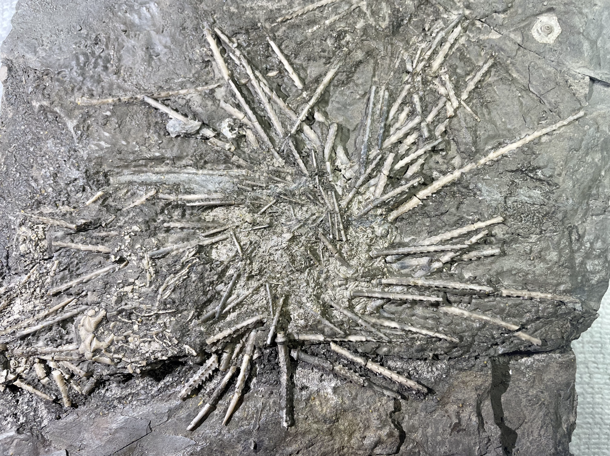
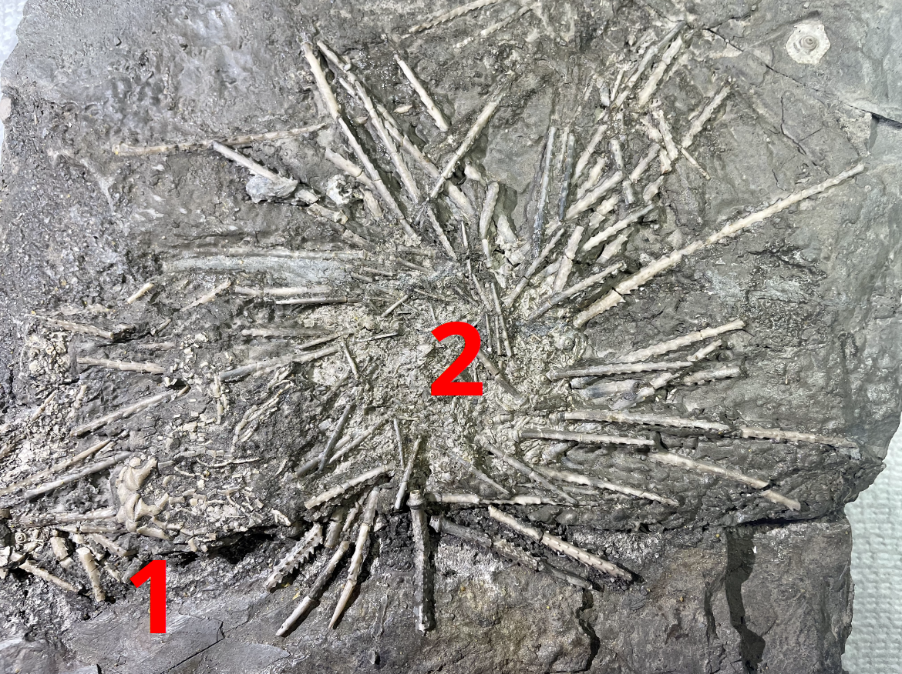
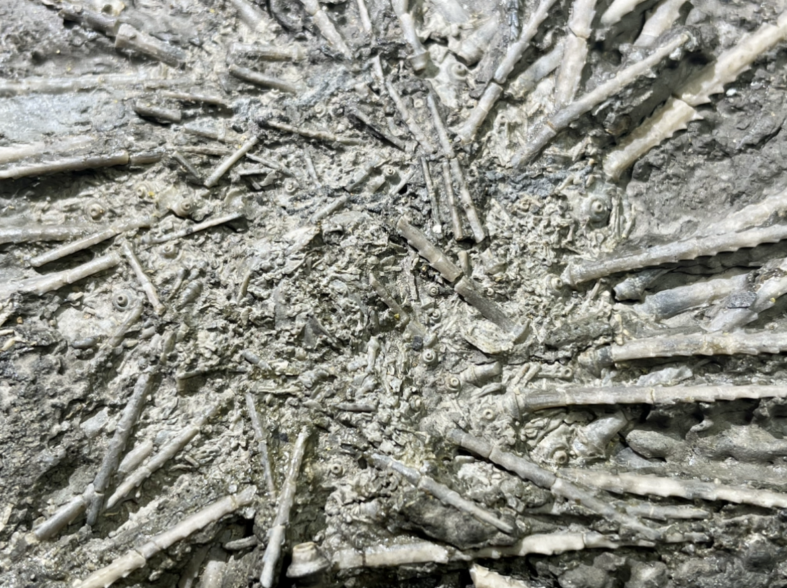
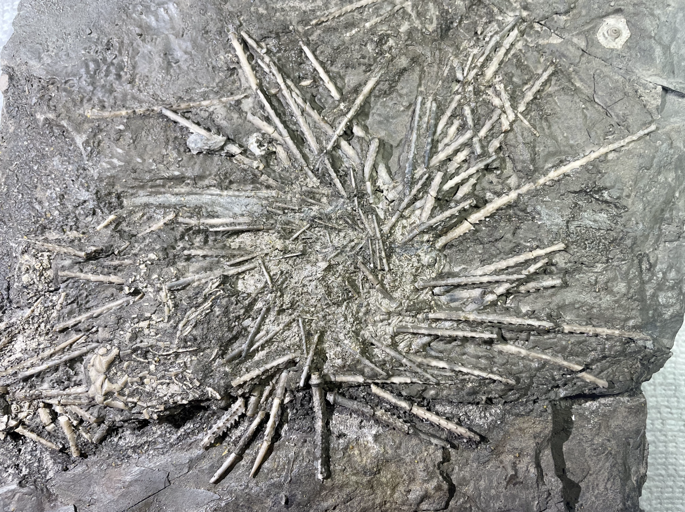
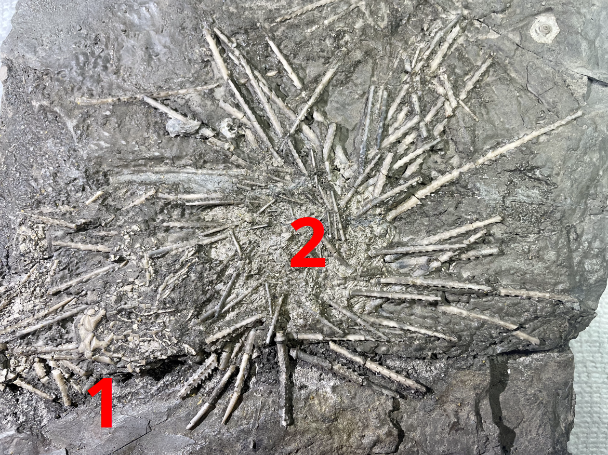
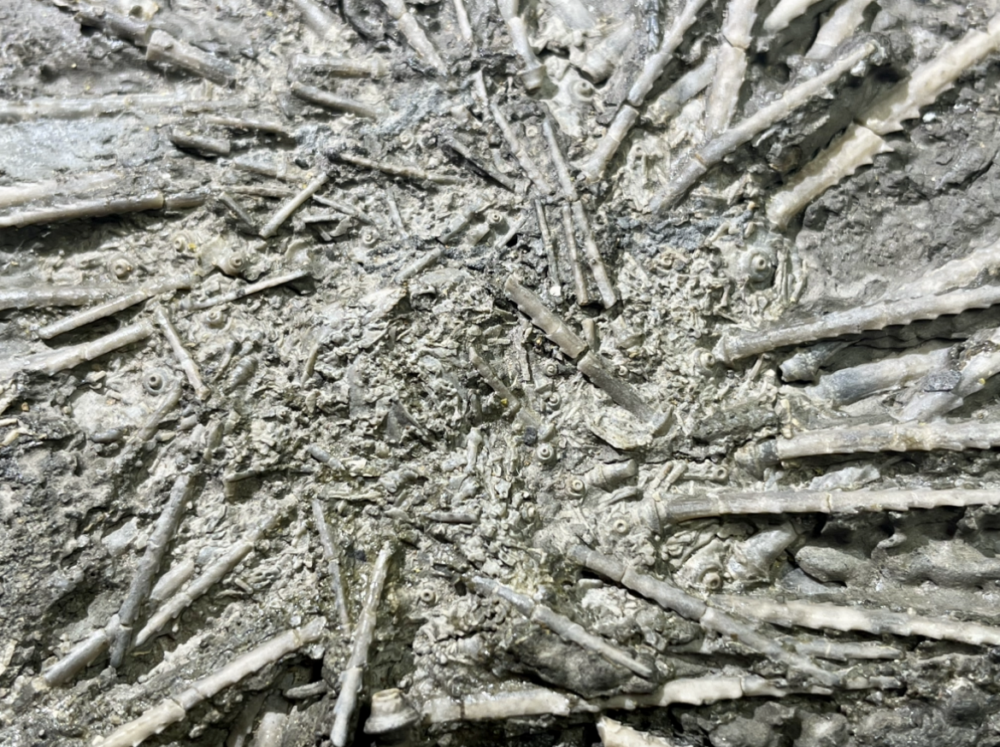

1. Clathrocrinus sp. aff. C. clathratus
2. Archaeocidaris brownwoodensis
Pennsylvanian
Winchell Formation
Brownwood, Texas, USA
Size: 3.5 cm crown for the Clathrocrinus
1. Here is a very interesting crinoid from the Pennsylvanian Winchell Fm. of Brownwood, Texas. This locality is primarily known as an echinoid (urchin) lagerstatte, for producing plates of spectacularly-preserved Archaeocidaris specimens. The unusual crinoid here was initially identified as a "Graffhamicrinus", but is almost certainly a Clathrocrinus. The bizzare zig-zag branching pattern of the ten arms is unique and different enough from all other known crinoids that Strimple erected an entirely new family (Clathrocrinidae) to accomodate it.
What is so interesting about this Clathrocrinus is that it appears to be undescribed/new from the Winchell Fm. In the literature there are three formally-described species: C. clathratus and C. clinatus from the Pennsylvanian-Missourian of Illinois, and C. grileyi from the Pennsylvanian-Atokan of Oklahoma. This specimen's anal plates are consistent with the two known Missourian species, but overall the crown has features of both: broader angles of arm-branching like C. clinatus, and bulbous calyx plates with deep sutures between them like C. clathratus, though the plates aren't quite as sharp or ornate. In my opinion this Clathrocrinus may be a new species and possibly ancestral/transitional. However a paleontologist's assessment will be needed to make the ID conclusive.
Addendum: Georgy Mirantsev has confirmed the identification of this specimen as a Clathrocrinus with affinity to C. clathratus.
 
